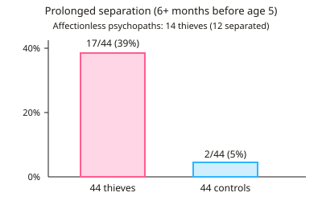

A-level Psychology Year 12 · Topic 7
Developmental area: core studies
The developmental area is about how we change from birth through childhood, and what shapes that development.
We will study Bowlby's forty four juvenile thieves on maternal deprivation, Samuel and Bryant on conservation, and Bandura, Ross and Ross on learning aggression by imitation.
For each study, focus on the method, key results and evaluation, and on what it tells us about nature, nurture and children's minds.
- 6 subtopics
- 177 questions
- Free: 7.1 notes and 10 questions
In this topic
- 7.1Bowlby (1944) Forty-four juvenile thievesFree below · 31 questions
- 7.2Samuel and Bryant (1984) Conservation in childrenOpen in Full Marks · 32 questions
- 7.3Bandura, Ross and Ross (1961) Transmission of aggression through imitationOpen in Full Marks · 36 questions
- 7.4Kohlberg (1968) The child as a moral philosopherOpen in Full Marks · 27 questions
- 7.5Lee et al. (1997) Chinese and Canadian children's evaluations of lying and truth tellingOpen in Full Marks · 27 questions
- 7.6Chaney et al. (2004) A new asthma spacer device to improve compliance in children: the FunhalerOpen in Full Marks · 24 questions
7.1 · Free notes
Bowlby (1944) Forty-four juvenile thieves

Key points
- Aim: to investigate whether there is a link between prolonged early separation from the mother (maternal deprivation) and affectionless psychopathy in juvenile delinquents.
- Sample: 44 juvenile thieves aged about 5 to 16, referred to the London Child Guidance Clinic where Bowlby worked. They were compared with 44 controls, who were emotionally disturbed children at the same clinic who had not stolen.
- Method: a quasi-experiment (the IV was naturally occurring: thief or non-thief) using matched controls. Data came from interviews with the children and their families, IQ tests given by a psychologist, and family histories taken by a psychiatric social worker.
- Affectionless psychopathy was defined as a lack of affection, guilt/shame and sense of responsibility towards others. Bowlby believed it made the child unable to form normal relationships.
- Key result 1: 14 of the 44 thieves (32%) were diagnosed as affectionless psychopaths. Of these 14, 12 had experienced prolonged separation. None of the controls were affectionless psychopaths.
- Key result 2: 17 of 44 thieves (39%) had experienced a separation of 6+ months before age 5, compared with only 2 of 44 controls (5%). Only 5 of the 30 thieves who were not affectionless had been separated.
- Conclusion: early and prolonged separation from the mother during a critical period of the early years can cause affectionless psychopathy and delinquency. This is Bowlby's maternal deprivation hypothesis.
- Strengths: the use of a control group, and detailed data from several sources (interviews, tests and family histories), which gives rich information.
- Weaknesses: researcher bias, because Bowlby carried out the assessments knowing which group each child was in. The separation data was retrospective, relying on parental memory. The design was correlational, so it cannot show cause and effect.
- Weaknesses (sample): the children were all from one London clinic and were already referred for problems, so the sample is unrepresentative and cannot be generalised. Later research (e.g. Rutter) separated deprivation from privation and questioned Bowlby's claims.
In more detail
- Worked percentages: 12 of the 14 affectionless thieves had prolonged early separation (86%), compared with 5 of the other 30 thieves (17%) and 2 of the 44 controls (5%).
- Critical period: Bowlby argued that the first 2½ years were critical, and that if a child was deprived of maternal care in this time, the damage could be permanent.
- Deprivation vs privation: Rutter argued that Bowlby confused deprivation (losing an attachment) with privation (never forming one), and that family discord, not separation itself, may explain antisocial behaviour.
- Impact: Bowlby's work, with the Robertsons' films, helped change hospital policies so that parents could visit and stay with young children.
- Exam tip: the study is correlational. Bowlby showed a link between separation and affectionless psychopathy, not that separation caused it.
Practice
Bowlby (1944) Forty-four juvenile thieves: 10 questions
Pick an answer to check it, or open the answer for the explanation.
1. How many juvenile thieves and how many controls were in Bowlby's (1944) study?
- 17 thieves and 44 controls
- 88 thieves and 44 controls
- 44 thieves and 22 controls
- 44 thieves and 44 controls
Show answer
D: 44 thieves and 44 controls. Bowlby studied 44 juvenile thieves and 44 emotionally disturbed non-thief controls from the same London clinic.
2. Who made up Bowlby's control group?
- Emotionally disturbed children who had not stolen, from the same clinic
- Adult offenders from a London prison
- Children with no problems recruited from local schools
- Thieves who had never been separated from their mothers
Show answer
A: Emotionally disturbed children who had not stolen, from the same clinic. Controls were emotionally disturbed children attending the clinic who were not thieves. This let Bowlby test whether separation was specific to stealing.
3. 17 of the 44 thieves had experienced prolonged separation. To the nearest whole per cent, what proportion is this?
- 39%
- 26%
- 17%
- 61%
Show answer
A: 39%. 17 ÷ 44 × 100 = 38.6%, which rounds to 39%. 17% is just the raw number and has not been converted to a percentage.
4. Which feature best defines an 'affectionless psychopath' as described by Bowlby?
- Extreme anxiety when separated from a caregiver
- Poor memory for childhood events
- Lack of guilt, shame and affection towards others
- Low IQ and poor school performance
Show answer
C: Lack of guilt, shame and affection towards others. Bowlby described affectionless psychopathy as a lack of affection, guilt/shame and responsibility, leaving the child unable to form normal relationships.
5. 12 of the 14 thieves classed as affectionless psychopaths had prolonged separations. What percentage is this, to the nearest whole number?
- 71%
- 12%
- 14%
- 86%
Show answer
D: 86%. 12 ÷ 14 × 100 = 85.7%, which rounds to 86%. This high figure supported the link between separation and affectionless psychopathy.
6. Of 30 thieves not classed as affectionless, 5 had prolonged separation. Compared with 12 of 14 affectionless thieves, what does this suggest?
- Separation was more common in non-affectionless thieves
- Separation was far more common in affectionless thieves (86% v 17%)
- Separation was unrelated to stealing
- Separation was equally common in both thief groups
Show answer
B: Separation was far more common in affectionless thieves (86% v 17%). 5/30 is about 17%, compared with about 86% for the affectionless group. This suggests separation is especially linked to affectionless psychopathy.
7. Bowlby diagnosed the thieves and also interviewed their families about separations. Which problem does this create?
- Low inter-rater reliability between observers
- Demand characteristics from the control group
- Researcher bias, as he knew which children were thieves
- Participant attrition over time
Show answer
C: Researcher bias, as he knew which children were thieves. Because Bowlby knew each child's group, his expectations could have influenced his interviews and diagnoses. This is researcher (experimenter) bias.
8. Why is the data on early separations in Bowlby's study potentially unreliable?
- It relied on parents' memories of past events (retrospective data)
- It was collected by observing children at home
- It was gathered from only one family
- It was collected using closed-question questionnaires
Show answer
A: It relied on parents' memories of past events (retrospective data). Separation histories were recalled by families after the event. Retrospective data can be forgotten, distorted or biased.
9. A student concludes 'separation causes children to steal'. What is the best criticism based on Bowlby's design?
- It was a true experiment with random allocation
- It was a quasi-experiment, so cause and effect cannot be established
- The sample was too large to be meaningful
- The thieves were too young to be interviewed
Show answer
B: It was a quasi-experiment, so cause and effect cannot be established. Thief or non-thief was not manipulated or randomly allocated, so the link is correlational. Other factors, such as poverty, could explain it.
10. Using Bowlby's findings, which child is most at risk of developing affectionless psychopathy?
- Separated from mother for 2 weeks at age 9
- Separated from mother for 3 days at age 6
- Separated from mother for 8 months at age 2
- Stayed with mother but changed school at age 4
Show answer
C: Separated from mother for 8 months at age 2. Bowlby linked prolonged (6+ months) separation in the early years, before about age 5, to affectionless psychopathy. The other cases are short or late.
Keep going in Full Marks
Full Marks has 31 questions on Bowlby (1944) Forty-four juvenile thieves (21 more than here), set out in practice levels. You also get notes and 3D models for all 6 subtopics of Developmental area: core studies, plus games, timed exams and past papers.
On your exam board
- OCRTopic 5: Developmental area: core studies, Topic X: Wider reading: more classic studies
- EdexcelTopic 4: Learning theories
- CambridgeTopic 4: The learning approach
Not in the AQA specification.